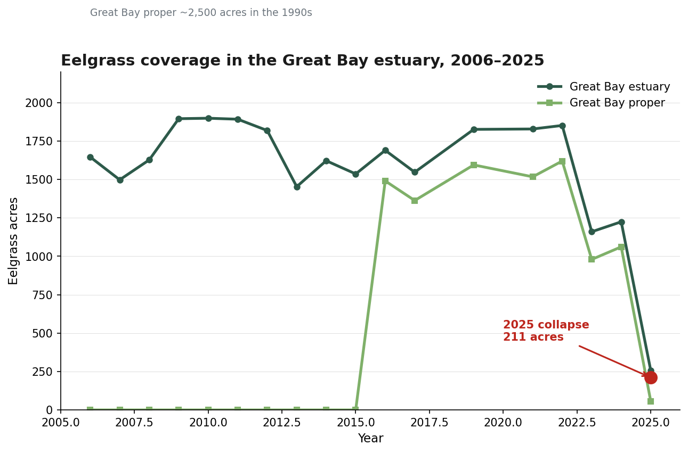
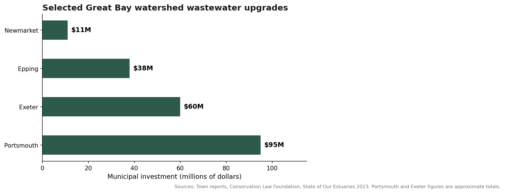
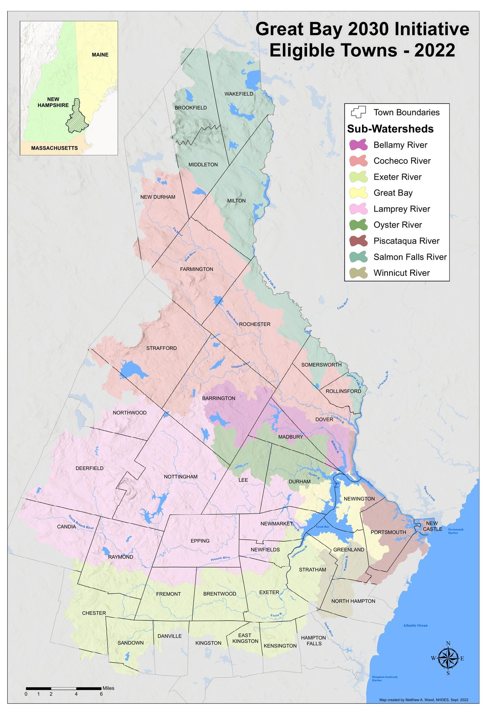

A rough draft on the loss of New Hampshire’s underwater meadows — and what it will take to bring them back.
For over two decades, scientists and conservationists have warned that the eelgrass in the Great Bay was declining and headed towards collapse. It’s been the topic of conversation of government boards and commissions and it’s been the target of millions in investment in water treatment plant upgrades and stormwater runoff mitigation.
The eelgrass population has collapsed in Great Bay, despite those efforts.

For a while, it looked like the “hold the line” plan of targeting pollution at its most obvious sources – the 13 wastewater treatment plants that feed into the Piscataqua River – was potentially going to work. The eelgrass population had sunk from its high of 2,500 acres in Great Bay proper in the 1990s to around 1,500 acres, but had stabilized for around 15 years.
Then record-breaking rains came in the spring of 2025 and brought record-breaking levels of sediment down through the river and into the bay.
Then in April, news from the annual eelgrass survey showed that population in the Great Bay Estuary dropped by 80%, down to 211 acres. In Great Bay proper, the collapse was worse. The small tidal basin saw a 98% collapse, down to just 21.5 acres. Almost all the remaining eelgrass in the estuary is down in Portsmouth harbor near the Wentworth by the Sea Marina and off Fort Foster in Kittery.
To the 52 communities in the Piscataqua Region watershed, it was a gut punch that the work they’d been doing to reduce pollution over the years was maybe not going to be enough.
“A lot of us were hoping that there would’ve been more progress over the past and we have made a lot of progress with reducing pollution,” said Kalle Matso, director of the Piscataqua Regional Estuaries Partnership (PREP) at the University of New Hampshire, which authors the annual surveys. “We haven’t made as much progress with the health of the ecosystem.”
“When you look at what the science would indicate, it’s around the entire planet, people are in the same situation we’re in. ‘Why isn’t the seagrass coming back?’ We’re not the only one with this problem.”
What the die-off from the rains have shown is that a changing climate can stir up old sins that have a way of sticking around.
Eelgrass is an interesting plant. Apparently its ancestors lived on land and after they went to sea 140 million years ago, they decided to stay. It’s one of the few underwater marine flowering plants that pollinate while submerged. It anchors in the sediment, spreading underground roots called rhizomes and can populate by cloning itself. One successful line of seagrass (a relative of ours in the Great Bay) off Australia is 4,500 years old and 77 square miles.
Eelgrass is a sentinel species and just like the canary that coal miners would carry with them to warn them of carbon monoxide build up, the death of eelgrass is an indicator that other species in the area are about to die. Eelgrass oxygenate and support water quality, anchor the sediment and prevent erosion, create nurseries for oysters and juvenile fish, food for geese and are recognized as important carbon sinks for climate change as they decompose underwater more slowly than trees do on land.
“Seagrasses, salt marshes, shellfish beds, these different wetland systems are incredibly important feeder systems and nurseries,” Matso said. “50% of the seafood you eat depends on wetlands at some point in its life. If we treat our wetlands poorly, we’ll have to figure out how to grow seafood in a lab.”
One thing that eelgrass doesn’t like warming waters. That or fast flowing floodwaters, which are both becoming more common as the global climate continues to change. It doesn’t like invasive blue crabs and it especially doesn’t like pollutants like nitrogen and sulphur. The very nature of eelgrass meadows, which settle sediment and slow the flow of water, is both what attracts life to them and pollution to settle around them.
The double-edged sword is that eelgrass and other seagrass meadows are great for filtering out pollution, but our filters are overloaded. That’s even moreso true for the Great Bay Estuary, which is one of the most recessed estuaries on the East Coast, and is described as a coastal lagoon.
The Great Bay Estuary is a unique one. The fresh waters of the Salmon Falls River meets the Cocheco River at Dover to form the Piscataqua River, which circulates water into and then out of the Great Bay from the north. From the northwest, the Bellamy River comes in from southern Dover and the Oyster River brings water from from Durham. From the west, the Lamprey River’s brings its tributary waters from Newmarket and from the southwest, Exeter, Stratham and Newfields contribute to the Great Bay through the Squamscott River. The southeast has the Winnicutt River and many minor tributaries running through Stratham and Greenland down into the bay. The Pease Airforce Base, Golf Course and Portsmouth International Airport cover the eastern and northeastern edge of the Great Bay Wildlife Refuge and though the parking lots and landing strips of the malls and industrial zones of Newington don’t have a named river that they contribute to, their proximity to the bay ensures their stormwaters reach the impacted lagoon.
“The Great Bay doesn’t flush water in and out,” said Bonnie Brown, biological sciences professor at UNH. A few years ago, Brown and her colleague Greg Moore studied concentrations of microplastics pollution in the Great Bay Estuary, the Hampton-Seabrook Estuary and the Great Marsh Estuary. One thing they found was that the Great Bay estuary had significantly higher rates of microplastics pollution than the other estuaries because most things that enter the bay, settle there. “On the map, it has only one itty bitty way in and one itty bitty way out and its a long road. You can be getting anything from the drainage basin, but also anything from the Piscataqua.”
While water that entered into the other two estuaries could take anywhere from 24-48 hours to circulate, it could take a month or longer in Great Bay. While microplastics were found to settle around the shallows and in seagrass beds and do hinder its ability to tolerate higher temperatures, Brown doesn’t think microplastics are a large contributor to the eelgrass die off. However, as their research found, eelgrass meadows and salt marshes are an important tool in filtering out microplastics and other pollutants from our systems.
That role as nature’s filter was overloaded when the rains brought a deluge of sediment and pollution down into the bay.
That’s why the health of the whole ecosystem and watershed matters as much as the health of the bay itself.
“The Great Bay and all the marshes, they were used as extensive food and medicine resources,” said Paul Pouliot, male speaker for the Cowasuck band of the Penacook Abenaki people. “Cattails gave us shampoo and antibiotics and we would grind the eelgrass seeds into flour. We were defensive of them and told the colonials that the smell of the clam flats, the sulphur, we would tell them it was the devil. It kept them out for a while.”
The same richness of life that brought the Cowasuck Indigenous people to the bay brought colonists and with them, industry.
The large tidal ranges of the inner lagoon allowed for flat-bottomed gundalows to ply their trade on the river. Trade evolved from lumber and paper mills to tanneries and gristmills and the Great Bay worked as an area to nurture life as well as a dumping ground for industrial waste for many years.
“When you pollute in an abatement, especially a coastal lagoon like Great Bay, that water isn’t flushed out like in Portsmouth Harbor,” Matso said. “The sins of the past don’t go away when you say stop. They remain in that system for decades.”
Luckily, there have been active efforts to turn things around for decades.
It was pretty clear in the early 2000s that the Great Bay was suffering from eelgrass loss and increasing nitrogen loads in the estuary. The state was required to report on the status of their water bodies and whether they were meeting their “designated uses” under the Clean Water Act (CWA), explains Melissa Paly, the Great Bay-Piscataqua Waterkeeper for the Conservation Law Foundation (CLF) in Concord.
“It was clear back then that most of the rivers in Great Bay and Little Bay were not meeting their designated uses, just for aquatic life support for the things that are supposed to live in the estuary,” Paly said. “It was a pretty low bar.”
At the same time, the CLF was seeing the Environmental Protection Agency, which was responsible for enforcing the Clean Water Act, issue waivers to communities for secondary treatment of their sewage. The CLF put pressure on the EPA to enforce better sewage treatment and as the story goes, some communities stepped up to clean up their sewage.
Newmarket voters approved the bonds for and installed $14.1 million in upgrades in 2017 for their trickling water treatment system. They even won an award for their engineering and design. Exeter voters approved a $49.9 million bond, and with state grants spent $53.5 million upgrading their lagoons in 2019.
Rochester, Portsmouth and Dover banded together to challenge the EPA’s efforts. Paly said the opposition eventually broke when Jeff McMenemy at the Portsmouth Herald made public records requests and showed the community how much it was spending to fight the EPA and the tide of public opinion began to shift, along with the make-up of the city council.
“In Portsmouth, we call ourselves an eco-municipality and we were spending millions of dollars to fight it,” Paly said. “So the three communities came around and put their money into cleaning the water.”
Portsmouth finished its $100 million upgrade to its treatment facility at Pierce Island in 2021. Most recently, in March, Epping voters approved a $38 million wastewater treatment bond and have plans for upgrading their facility.
That agreement eventually led to the EPA delivering the Great Bay Total Nitrogen General Permit in 2021. It covered 13 wastewater treatment facilities in 12 communities and sets seasonal nitrogen load limits for the plants. It targets point sources, or wastewater treatment facilities, as well as non-point sources, which is stormwater runoff that carries pollutants across the land and down into the bay.

“It’s an unusual permit in that it says ‘if we can reduce nitrogen by better managing stormwater, then shouldn’t we be allowed to do that?’ It sets up a voluntary mechanism by which communities can do more stormwater management without having to achieve the limits of technology at their wastewater facility,” Paly said.

One city tackled the permit not as a compliance problem on paper but as a maintenance problem to solve in the field.
Before taking on his current role as environmental project manager for the city of Dover, Tim Puls was with the UNH Stormwater Center and had worked on projects with the city of Dover. One focused on cleaning up Berry Brook, the urban stream that runs behind Hannafords and Shaws and parallels the Cocheco River. He installed a number of stormwater BMPs, a term for “best management practices” and can include anything from a retention pond that stormwater flows into before going to the river, to a swale or rain garden.
While wastewater treatment plants are regulated through the EPA permitting process, cities without sewer systems need to apply for what is called the Municipal Separate Storm Sewer System Permit, also known as the MS4 program.
“Coming full circle, now I work for Dover and I’m in charge of managing the MS4 permit and part of that is inspection and maintenance of BMPs,” Puls said. “The most valuable thing is the maintenance and inspection program. If you don’t maintain them, then two years after, no one has touched it and it is full of coffee cups and trash and becomes a source of pollutants, not one that filters them out.”
With rolling out the BMP program, Dover first targeted city-owned property where the city could maintain a BMP and to get them up and working and removing pollutants. They’ve installed bioretention ponds where stormwater runs through a filter media of 60% sand, 20% woodchips and 20% loam.
They’ve also started adding the leftover material from the water treatment process into their mix. It’s called ‘alum’, short for aluminum sulfate, and is a waste product from wastewater treatment plants. It is used to bind phosphorous and clean drinking water, but the byproduct is frozen, separated and added in bits to the bioretention medium, which works to filter phosphorous out of the stormwater before it enters the waterways.
“There’s a lot of smart people all over the Northeast working on this stuff and we’re implementing them here in Dover where we can,” Puls said. “Utilizing waste product in one industry for a fresh product in another is a good cycle to keep.”
Since Dover doesn’t have its own treatment facility, it purchases the leftover waste product from Durham’s water treatment plant to add to its BMPs. The investments in point source pollution have trickled down to non-point source pollution.
It’s not just the technology. From the get-go, Dover has stepped up in managing stormwater, Puls said. The support from the public and city council for their work goes a long way toward allowing engineers and public works staff flexibility in designing stormwater systems that can satisfy what can sometimes be a moving target with the EPA permits.
“We’re involved with all of the Seacoast stormwater programs and have been an early adopter of stormwater plans and technologies for a couple decades at this point,” Puls said.
The city nearly became the first in New Hampshire to create a stormwater utility in 2023 that would have created a mechanism for a property to be assessed a fee on how much stormwater runoff it generated. The program was ultimately voted down 6-3 by the city council after opponents labeled the plan a “rain tax”.
Despite the setback, the city still must meet its requirements for the MS4 permit and it is financed broadly through the general fund. Public works staff reduce the city’s pollutant discharge into the Cocheco through aggressive maintenance of its 80 city BMPs and inspection of the 120 BMPs on private land.
Dover city code requires that private developers, whether it is new development or redevelopment, have a portion of their property dedicated to stormwater runoff management that removes total suspended solids, total nitrogen and phosphorous.
Currently, the city inspects the 120 BMPs on private commercial land and that number continues to grow all the time, Puls said.
Dover is only one of the many towns and communities putting in the work. Across the 52 communities in the watershed, the results of all that investment and effort are real, but uneven. The most recent “State of the Estuaries” report was in 2023 and captured both sides of the ledger.
All the work and investment that Great Bay municipalities have put into reducing their impact on the bay has paid off. The 2023 “State of the Estuaries” report - which is released every five years by PREP - showed serious progress. Point-source nitrogen pollution from wastewater treatment plants was down at its lowest levels since monitoring began in 2003: 196.9 tons per year. Most fecal-indicating bacteria is on a downward trend and there were also great strides being made in the conservation of land around the watershed.
https://stateofourestuaries.org/indicators/
The report also delivered some not so great news. Non-point source pollution had increased by 15% from the previous monitoring period (2013-2017), but it was the second-lowest reading since 2003. More parking lots, roads, homes and other impervious surfaces were being built. Only a little over half of the 42 communities had adopted stormwater standards and none had a stormwater utility. On top of that, it rained more, which brought more pollution across the landscape, into the rivers, stirring up the sediment, clouding the water, blocking the light, then eventually settling the pollution down into the eelgrass beds. Natural oyster reefs were down 80% from their levels in 1993, softshell clam populations were consistently below goals even in good years and beach advisories continued to climb. Volunteer hours also declined.
Non-point source nitrogen loads were up to 699 tons per year. Combined with discharge from the treatment plants, which reduced their point source loads by 48% over that period, the communities around the Great Bay were delivering 895 tons of nitrogen into the bay each year.
To meet the EPA’s calculation in its permit of 100 kg of nitrogen per hectare per year for the 13.4-square-mile tidal area, Great Bay communities in New Hampshire and Maine need to reduce their nitrogen loads into the bay by 57% from 2017-2020 levels. Down to a total nitrogen load of 384 tons per year.
Non-point sources include: - Septic systems and leaky sewer lines - Fertilizers - Pets and livestock - Atmospheric deposition
“These very massive investments in wastewater treatment have made an important impact. It’s extraordinary news,” Paly said. “But its the runoff that happens every time it rains. It carries the nitrogen, the phosphorous off the pavement and rooftops and all the hardened sources where we’ve turned forestland into pavement. That’s the largest source of our pollution in the estuary and even with the voluntary trading mechanism set up by the recent permit, we’re not even close to making a dent in non-point source pollution.”
Of the 52 municipalities in the watershed, 10 are in Maine and follow the state’s stormwater management standards on impervious surfaces, runoff and pollutants. Of the 42 in New Hampshire, 24 had adopted complete stormwater standards as of the report, which was released in 2023.
Some cities have been successful at receiving waivers from the EPA permitting process. Of the 42 municipalities, 20 towns have a fully regulated MS4 permit with the EPA, 10 towns are outside of a Census Urbanized Area and therefore don’t need a permit regulating runoff for their sewer systems, according to EPA rules, and 12 are inside urban areas but have populations under 1,000 people and they were granted a waiver by the EPA.
Newfields is a town of 1,680, is designated as an urban area, has a wastewater treatment facility and a sewer system that sends stormwater to the bay. The town received a waiver from the EPA in 2013 due to the size of their population and hasn’t triggered a review in 13 years.
https://www.epa.gov/npdes-permits/regulated-ms4-new-hampshire-communities
Newington, home to the Fox Run Mall, Pease International Tradeport, NH Air National Guard base and the Great Bay National Wildlife Refuge, has less than 1,000 permanent residents. The town’s wastewater treatment facility treats the waste from the commercial sector and the town itself doesn’t have a sewer system, so also doesn’t need to apply for an MS4 permit.
Despite this, Newington is tied for the fourth place with Hampton for the highest percentage of impervious surface among the 42 municipalities in New Hampshire. Approximately 17.3% of the town is covered in impervious pavement buildings and the water runs off the parking lots at Fox Run Mall just under I-95 to reach the Great Bay.
| Town | % Impervious Cover |
|---|---|
| Portsmouth | 26.8% |
| Seabrook | 20.8% |
| New Castle | 20.5% |
| Hampton | 17.3% |
| Newington | 17.3% |
| Somersworth | 16.6% |
| Dover | 15.0% |
| Kittery | 11.8% |
| Rochester | 10.6% |
| Exeter | 10.1% |
Table from 2023 State of Our Estuaries Report.
“The EPA is in the process of reevaluating the MS4 programs and we would argue strenuously that Newington should not get a waiver. Even if the population is low, they have a massive amount of pavement,” Paly said.
The permits, waivers and municipal investments were all progress that was being actively made. Then the wet spring of 2025 happened and showed how quickly a trickle can turn into a deluge.
Yet with all things being equal, the eelgrass did show signs that the progress being made was having an effect.
What hadn’t been entirely expected was the extent to which the Great Bay was always going to reflect the health of the land around it.
“Ten years ago, we were saying that if we just reduced the pollution we were putting into the bay, there was a chance the seagrass would come back,” said Matso. “That’s what we all wanted and hoped, for the towns that put so much into this, but that is not looking like it’s the case.”
The goal of reducing nitrogen and other nutrient loads into the Great Bay and Piscataqua River estuary was a clear objective and has reduced the total amount of pollution going into the bay. Now, the issue has become: How long does it stay around?
Researchers in Denmark have been studying the Odense Fjord, a shallow estuary with high nutrient loads and a water residence time of around 17 days, very similar to the Great Bay, Matso said.
What is being found is a reckoning with how long pollution stays in the sediment of a eutrophic (high nutrient load), shallow estuary. The Danish study found that some organic carbon was non-degradable under those conditions and between a 5 and 57% reduction in organic carbon could take 23 to 50 years. With so much carbon locked into the sediment, complete recovery may not be possible without active intervention.
With low flush rates, excess nutrients from fertilizers on lawns, golf courses or farms sprouts algae blooms which block the light, killing seagrass more, then when the algae dies off, the decomposition consumes oxygen faster than it can be replenished. The dead carbon from the algae can decompose, but the simple stuff decomposes first while the complex stuff sinks to the bottom and binds to the sediment and becomes protected from decomposition.
It's a vicious cycle of more nutrients, more algae, more dead organic matter, less oxygen, slower decomposition, more stored carbon, weaker sediment, more resuspension of sediment, less light, less eelgrass and even less oxygenation and filtering.
“If you asked a scientist, ‘if nothing changes, will we bounce back to 40%? 50%?’’ Most will say no. The eelgrass could bounce back, but probably won’t,” Matso admitted. “The reason for that is the same as humans. It’s way easier to keep someone healthy than it is to make them healthy again.”
For over a hundred years, the Great Bay and the surrounding watershed has stored the pollution from industry, from human activity and even natural occurrences. Other similar bays or estuaries flush their systems more regularly. The Odense Fjord had an unnaturally long residence time of around 17 days and the Great Bay also has a very long one, of up to a month or more.
Then, we have climate change to add to the mix. In the spring of 2025, storms continued to roll into the area, dumping water across the entire bowl of the watershed, sloshing through the streets and sewer systems, across recently fertilized lawns, down into the Great Bay.
“Because of climate change, we have increasingly prolonged drought alternating with increasingly intense rainfall,” Paly said. “There wasn’t a sunny weekend from April to the end of June. It was like chocolate milk in the estuary for months. The eelgrass tanked.”
When the eelgrass disappears, the bay won’t just lose its meadows. Junior fish start to lose cover from predators and clams and oysters have fewer places to settle. The small invertebrates that feed larger animals start to thin out. Then the soil gets loose, because what was keeping it down before was the eelgrass rhizomes that effectively created a net over the muddy soil. Storms then easily stir up the sediment, blocking the light, killing off the remaining eelgrass. Without that, then there is less of a filter in the bay and there are more and more algal blooms.
Eelgrass and seagrass meadows store carbon more efficiently, acre for acre, than many forests and with their loss, another carbon sink is lost that would help the larger overall system reduce climate change.
There is a silver lining. While the eelgrass in the Great Bay is nearly gone and not likely to come back without significant intervention, the eelgrass meadows in Portsmouth Harbor, where the now cleaner, treated waters from the Piscataqua rush to meet the cooler waters of the Atlantic, is improving.
The Danes also didn’t leave us without hope. When they realized they had permanently changed the quality of the sediment so their seagrass didn’t come back, they looked for ways to accelerate the change back to healthy soil.
They’ve done experiments with “sand-capping” where a 10 centimeter layer of sand is laid in large plots over the mud or silt and reduces the suspension of sediment. Matso thinks that the region may try to do an experiment on sand-capping, but there are other ideas that are kicking around and the perennial problem that rears its head is funding.
“There’s a segment of the population that hears about and says ‘I didn’t know it was this bad, let’s do something’ but then there’s another segment that has to be extremely pragmatic, like municipal representatives, who at this point in time have to pay their bills across the board for schools, roads, maintenance and law enforcement,” Matso said. “It’s not a great time to be in municipal government.”
The science is saying that the recovery will be slow and require patience. The politics say it will cost money and potentially be unpopular. However, the history of other estuaries and the local fight to save the Great Bay say its not impossible.
There are success stories of communities coming back from seeing their bodies of water polluted and forcing a change.
“We’ve seen in Chesapeake Bay and Tampa Bay, the crisis got so bad people stepped up and said ‘we’re ready to do something about this’,” Matso said. “In those places, the connection between clean water and local prosperity was visible. In Tampa Bay, the green water and dead seagrass meant fewer manatees, fewer tourists and a direct hit to the economy. In New Hampshire, that link is less obvious.”
Despite having a business industry lobby in its corner, the Great Bay has attracted a large number of supporters and groups dedicated to its survival, some voluntary and some mandated.
One key voluntary group is MAAM, or the Municipal Alliance for Adaptive Management. It was an intermunicipal group formed under the 2021 EPA permit and towns contribute around $400,000 to $500,000 a year for monitoring, modeling and adaptive management. The group is working toward a December 2026 final report.
The Southeast Watershed Alliance created the 2017 Model Stormwater Standards and as of their report in 2022, only 24 of 42 watershed towns in New Hampshire had adopted the complete standards.
The Seacoast Stormwater Coalition helps towns with MS4 permits coordinate their annual reporting and to share compliance strategies, BMP programs and inspection routines for the EPA permit.
Then there is the Conservation Law Foundation that kicked off the whole push.
The CLF hosts a Great Bay Changemaker program and is coming up on its fourth session this fall. The program teaches community members about not just clean water in the bay but also in the waterways that contribute to it.
“We talk about what are the tools and tactics to move the needle and be more effective champions for clean water,” Paly said. “We’ll take action where necessary and push for stricter permitting, but there will always be competing needs for public dollars and without public support, without people standing up and saying ‘I care about this’ then it will not happen.”
While these groups continue to hold the line on reducing the watershed communities’ impact on the bay, there are other initiatives aimed at taking a longer view of rehabilitating the bay.
One overarching initiative is Great Bay 2030. Backed by a $12 million donation from the New Hampshire Charitable Fund and hosted by PREP, the program brings together more than 40 conservation, environmental and coastal organizations aimed at advancing efforts to clean the bay and keep it that way. The steering committee is headed by familiar names - the Conservation Law Foundation (CLF), the Great Bay National Estuarine Research Reserve, the Nature Conservancy in New Hampshire, the New Hampshire Department of Environmental Services (NHDES) and the Piscataqua Region Estuaries Partnership (PREP).
The plan is to split across five focus areas. One is public engagement with programs like the Great Bay Changemaker training and a website called 7rivers2coast.org where people can sign up for kayak tours or find volunteer opportunities.
The second focus area is land protection, which includes grants to towns and land trusts, such as the Southeast Land Trust (SELT).
A third is climate adaptation projects that help neighborhoods prepare for flooding, assist municipalities with stream-crossing upgrades and support teachers by helping bring climate science to the classroom.
A fourth focus area is habitat and water quality restoration - the work most directly aimed at the bay’s biology. Great Bay 2030 is funding salt-marsh restoration, fish-passage improvements, oyster aquaculture and more. One important area of work is water quality and Dover is running a regional street-sweeping program to keep sediment and nutrients off roads before they reach storm drains.
A fifth area is science, monitoring and adaptive monitoring. It’s the unglamorous infrastructure that is checking on the results of every other branch. This is where MAAM and other permitting activities take place.
This isn’t expected to bring the eelgrass roaring back. Great Bay 2030 is a sustained approach and experiment in whether the estuary can repair itself with enough help from people and institutions.
“The work is bigger than any one organization or initiative, and there is certainly a role for more people to be involved,” said Anne Cox, coordinator of Great Bay 2030 and PREP’s watershed resilience manager. “People can learn more about the issues affecting the estuary. They can volunteer in local conservation and restoration efforts. Importantly, they can engage in local decisions within their own community, ones that ultimately affect the Bay long-term. The more people who understand their connection to Great Bay and see a role for themselves in its future, the stronger our collective effort becomes.”
Individual actions are small at the scale of a 200-town watershed, but they add up: skip fertilizer on lawns, pick up pet waste, maintain septic systems, direct roof runoff into rain gardens or barrels, and avoid paving more than necessary.
The harder work is showing up. Water-quality budgets compete with schools, roads, police, and fire. Town meeting is where stormwater money is won or lost. The next State of Our Estuaries report is not expected until around 2028. The EPA is expected to reevaluate the MS4 permit program in 2026–2027, and advocates are pushing for stronger nonpoint rules and a reconsideration of waivers for high-pavement towns like Newington. The MAAM final report is due in December 2026.
In other words, the eelgrass will not be saved by one lawsuit, one bond, or one town or state working on the issues. If it can be saved, it will likely be by the same slow, recurring civic habits that originally polluted the bay: decisions made town by town, year after year, about what gets built, what gets protected, and what gets funded.
Assets bundled with this package:
Visuals still to create: top hero visual, eelgrass cross-section diagram. The year-slider, watershed map, and data charts are now live above.
{kind=link}
{kind=link}
{kind=link}
{kind=link}
{kind=link}
{kind=link}
{kind=link}
{kind=link}